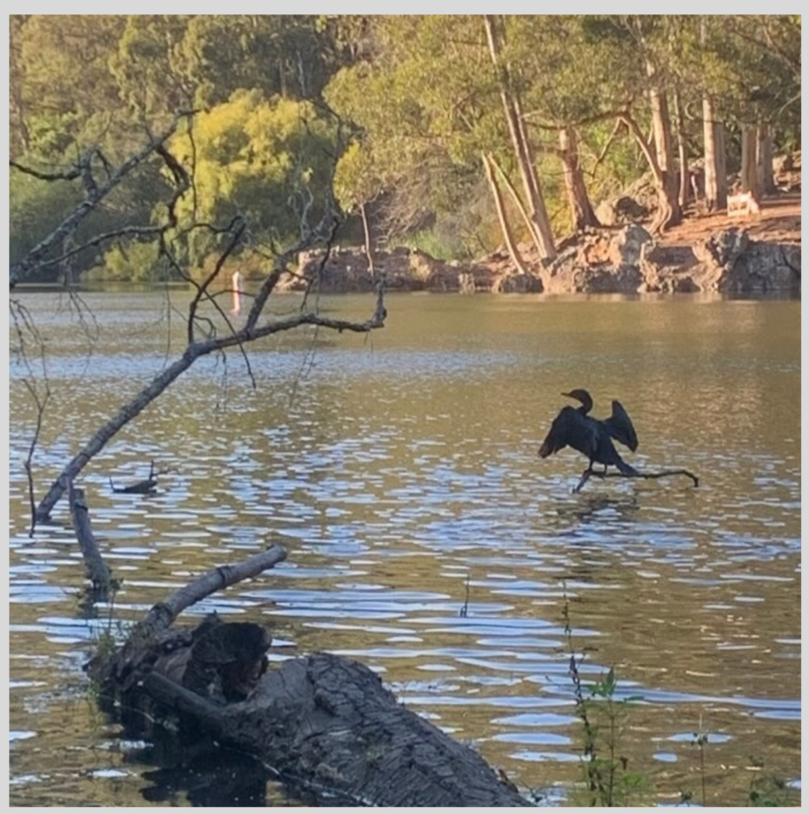
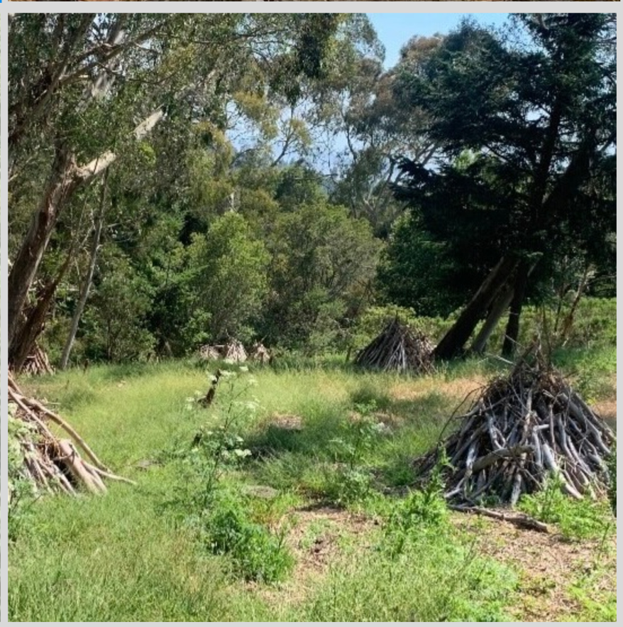
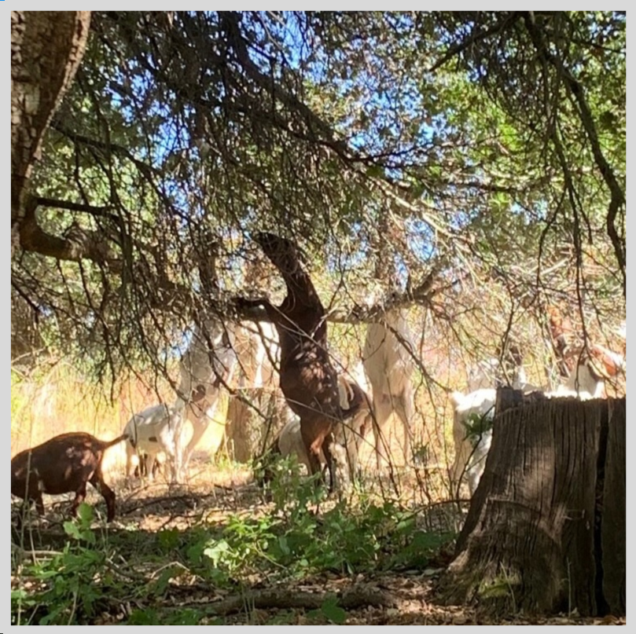
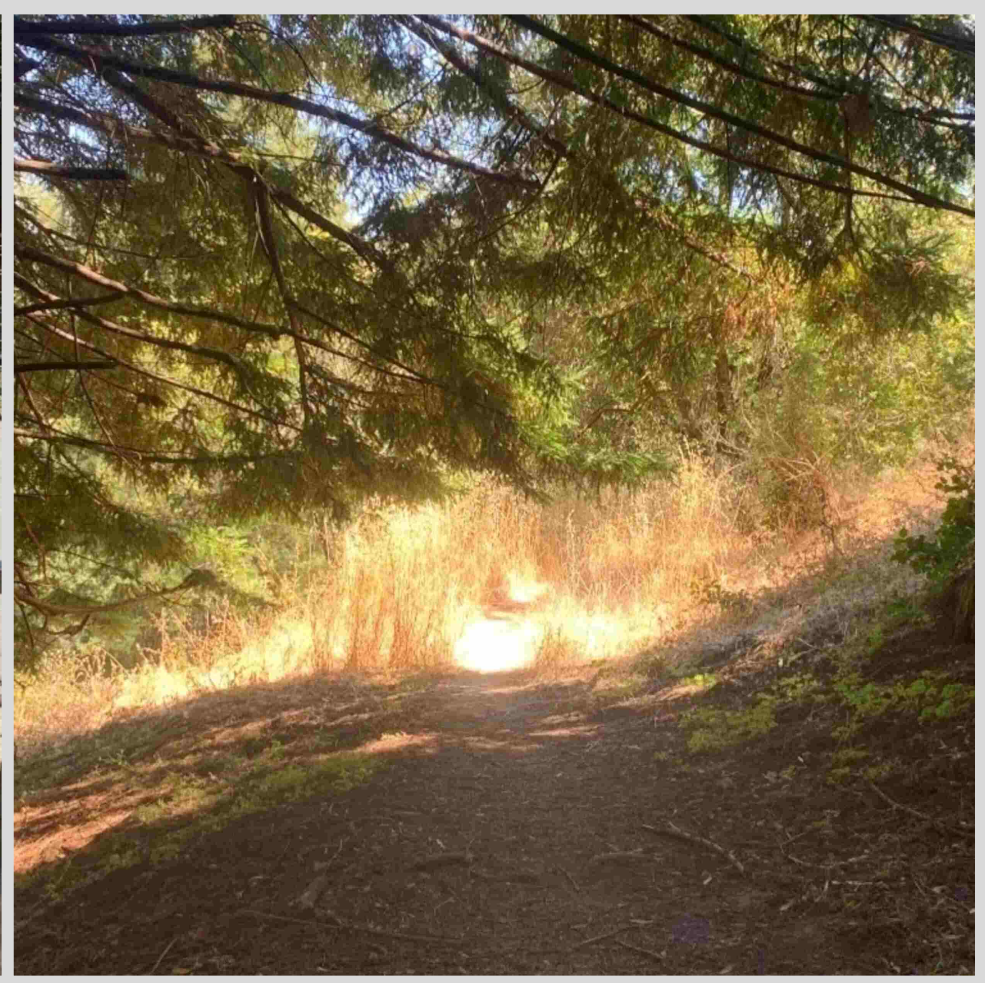
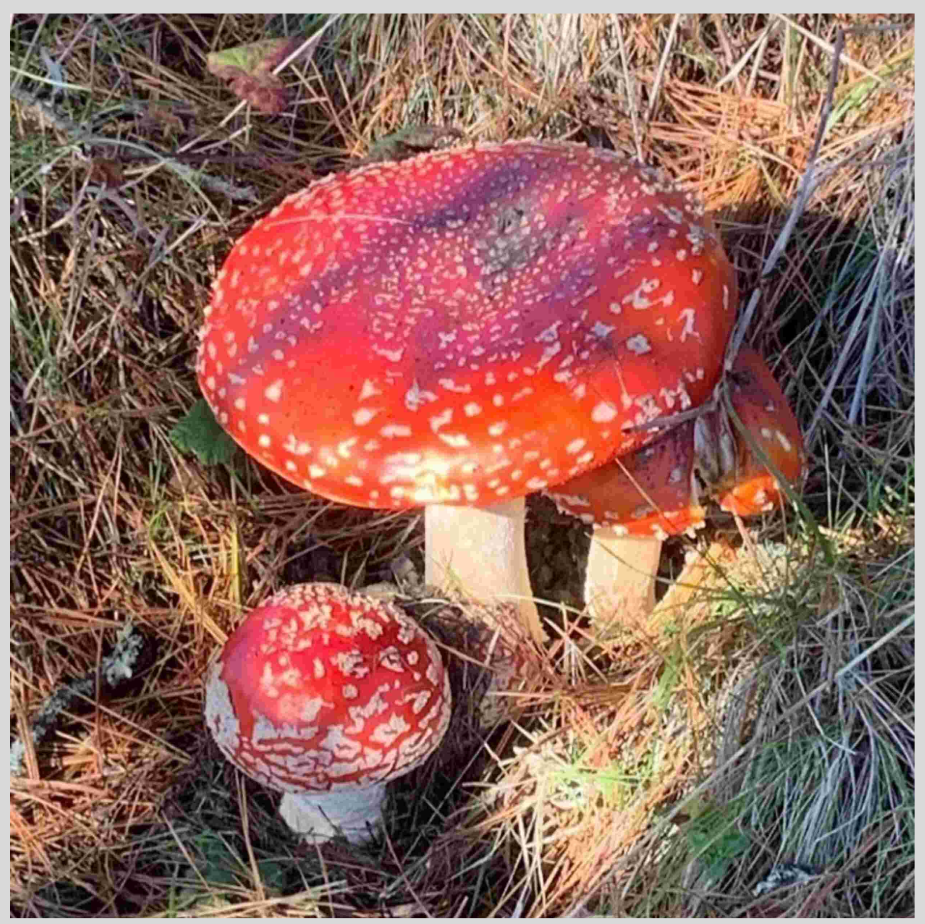
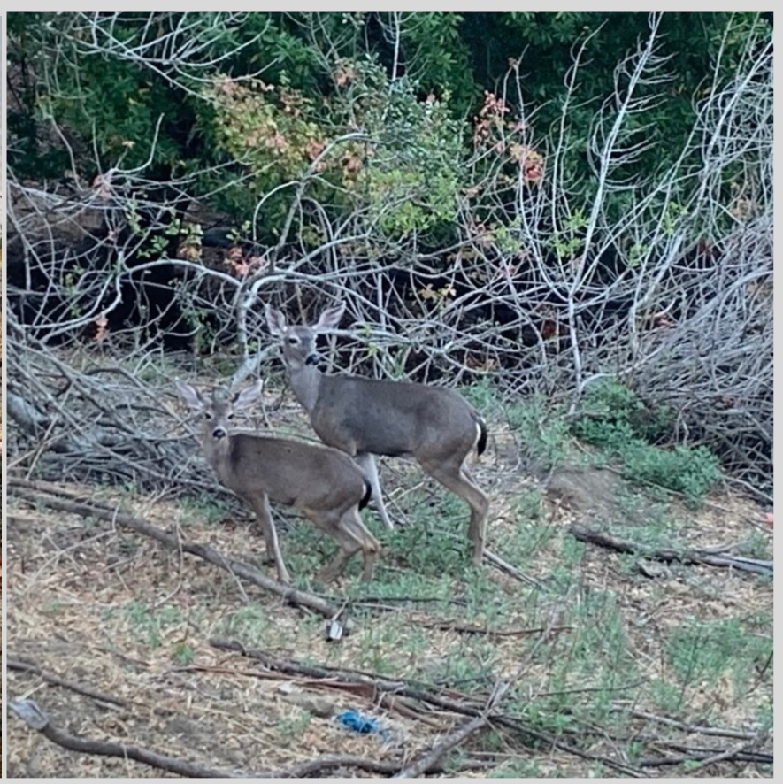

Every Picture Development
Design Notes:
- Intro screen
- make a more formal map
- ideally, icons for different locations
- larger images
- smaller # > 6
Text addition
Is there a place outside your childhood house that feels like a second home for you? For me that place is California’s East Bay Regional Park: Tilden. I grew up in the bay area and was lucky enough to spend formative years exploring the park’s incredible nature and attractions.
In my adulthood, I have established a deeper understanding of my relationship with this beautiful land I call home. After spending a college summer getting sunburnt walking on golden plains, I came to recognize that my body is alien to the land.
The contradictory feeling of being born an outsider in the land I call home gave me a new sense of responsibility towards all those that these lands were taken from. Only 230 years ago these lands belonged to, and were dearly loved by, the Ohlone and Bay Miwok speaking tribal groups.
In this project I want to express my dedication to this beautiful land and my solidarity with the Ohlone and Bay Miwok people. I hope to carry on their love for the land as best I can.
     